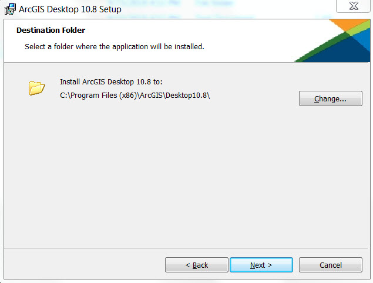
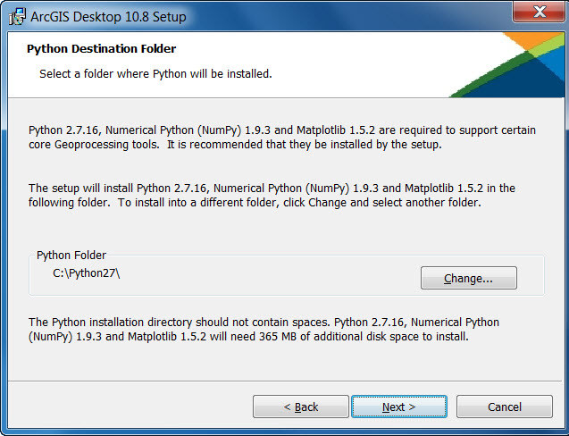
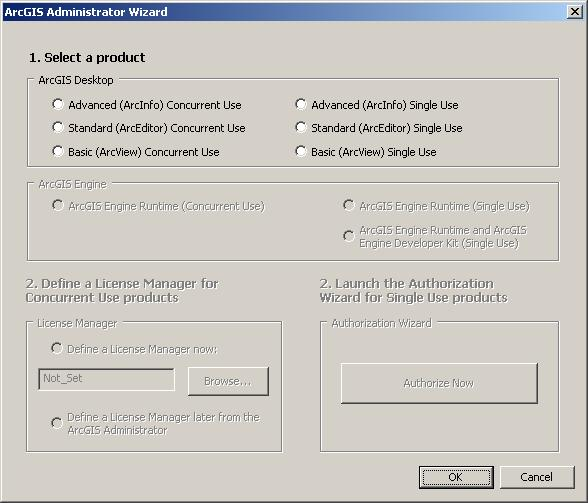

Installing ArcGIS Desktop on your computer
How to prepare to install ArcGIS Desktop
 Note:
Note:ArcGIS Desktop requires Microsoft Visual C++ 2015-2019 Redistributable (x86) minimum version 14.22.27821. If this is not already installed, setup.exe will install it before setup.msi is launched. To run Setup.msi (without running setup.exe) the redistributable must already be installed.
- Close all applications on your computer.
- Verify that your computer meets the system requirements.
- If you will be using ArcGIS Desktop Concurrent Use, determine the name of the license manager you will be using for ArcGIS Desktop.
- Run the ArcGIS Desktop setup.exe installation program.
How to install ArcGIS Desktop
- The ArcGIS Desktop download offers the option to start the installation after the files have been extracted. Choose this method or, to manually launch the setup program, navigate to setup.exe in your download folder.
- During the installation, read the license agreement and accept it, or exit if you do not agree with the terms.
- The setup program provides an option for a Complete installation, which installs the applications, style files, templates, and optionally licensed extensions. The Custom installation option allows you to choose specific installation components.

- The installation location will be identified in this dialog box or in the custom dialog box, if a custom option was selected. An upgrade will not allow you to select or change the installation location. The parent location of an upgrade installation is retained and the software is installed to <parent folder>\Desktop<version number>. For example, if ArcGIS 10.3 for Desktop was installed to D:\MyGIS\ArcGIS\Desktop10.3, the 10.8 installation folder will be D:\MyGIS\ArcGIS\Desktop10.8. If you need to install to a different location, manually remove your existing installation before starting the 10.8 installation.
- If Python is selected for installation, you must choose the installation location or select the default. The previous Python installation location will also be retained during the upgrade. See Python requirements for more information.

- When the setup is complete the ArcGIS Administrator Wizard is displayed, allowing you to configure a Concurrent or Single Use authorization. Refer to The ArcGIS Administrator for details.

Modifying installation features
You can add or remove components after installing the software. See Adding ArcGIS Desktop installation components for more information.
Additional installation components
The additional ArcGIS Desktop components, such as ArcGIS Tutorial Data, Data Interoperability extension, ArcGIS Desktop and ArcGIS Desktop Developer Resources, can be installed separately, if they are required.